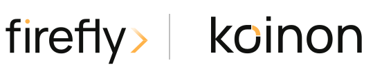
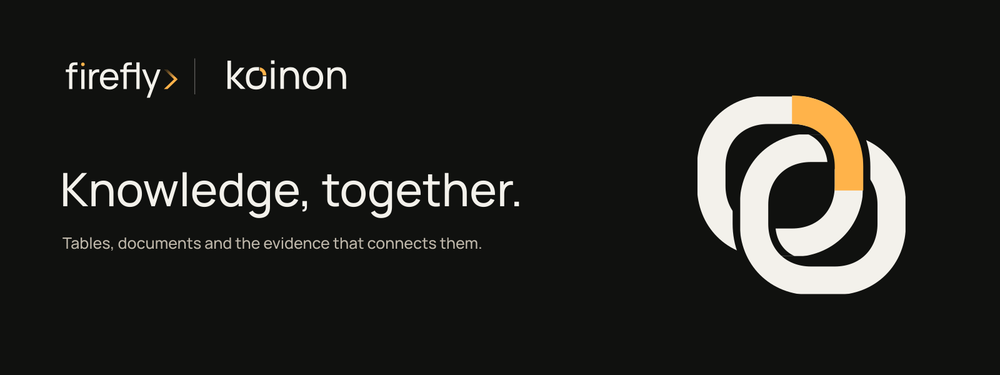
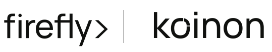

<!-- Copyright 2026 Firefly Software Foundation SPDX-License-Identifier: Apache-2.0 -->
<!doctype html><html lang="en"><meta charset="utf-8"><meta name="viewport" content="width=device-width,initial-scale=1"><title>firefly koinon identity</title><style>@font-face{font-family:Manrope;src:url(fonts/manrope-latin-500-normal.woff2)}*{box-sizing:border-box}body{margin:0;background:#f3f1eb;color:#272820;font:16px/1.65 Manrope,Arial,sans-serif}main{max-width:1440px;padding:64px 48px;margin:auto}h1{font-size:clamp(40px,6vw,76px);font-weight:500;line-height:1.08;letter-spacing:-.055em;max-width:900px}h2{font-size:28px;font-weight:500;letter-spacing:-.035em;margin:64px 0 20px}.lead{max-width:750px;font-size:20px}.banner{width:100%;margin:32px 0}.grid{display:grid;grid-template-columns:1fr 1fr;gap:24px}.sample{background:white;height:220px;display:flex;align-items:center;padding:40px}.dark{background:#10110f}.sample img{width:100%;height:auto}article p{display:flex;justify-content:space-between;margin:12px 0}a{color:inherit;text-underline-offset:4px}.swatches{display:grid;grid-template-columns:repeat(5,1fr);gap:16px}.swatch{height:100px;border:1px solid #d8d4ca}.small{max-width:800px;color:#62645b}code{background:#e4e1d9;padding:2px 6px}.heart{display:inline-block;width:14px;height:14px;vertical-align:-2px;fill:currentColor;transform-origin:center;animation:heartbeat 2s ease-in-out infinite}@keyframes heartbeat{0%,28%,100%{transform:scale(1)}8%,20%{transform:scale(1.16)}14%{transform:scale(1)}}@media(prefers-reduced-motion:reduce){.heart{animation:none}}footer{margin-top:64px;padding-top:24px;border-top:1px solid #d8d4ca;font-size:13px;display:flex;align-items:center;flex-wrap:wrap;gap:16px}.footer-credit{display:inline-flex;align-items:center;gap:6px}@media(max-width:650px){main{padding:32px 20px}.grid{grid-template-columns:1fr}.sample{height:160px;padding:24px}.swatches{grid-template-columns:repeat(2,1fr)}}a:focus-visible{outline:3px solid #855414;outline-offset:4px}</style><main><h1>Your corporate brain.</h1><p class="lead">koinon brings documents, data and reviewed knowledge together. Find sources, ask questions and review proposed updates before they change what your organization knows.</p><h2>A Firefly product</h2><p class="small">Use the canonical firefly wordmark, its chevron, a quiet divider and the koinon wordmark. The product symbol stands alone for application icons and compact navigation. Parent geometry remains unchanged.</p><div class="grid"><article><div class="sample "></div><p>color<a href="logos/firefly-koinon-lockup-color.svg" download>SVG</a></p></article><article><div class="sample dark"></div><p>reversed<a href="logos/firefly-koinon-lockup-reversed.svg" download>SVG</a></p></article><article><div class="sample "></div><p>mono black<a href="logos/firefly-koinon-lockup-mono-black.svg" download>SVG</a></p></article><article><div class="sample dark"></div><p>mono white<a href="logos/firefly-koinon-lockup-mono-white.svg" download>SVG</a></p></article></div><h2>One geometric language</h2><div class="grid"><div class="sample"></div><div><p>Two loops derived from the two o letters in koinon interlock around a shared context. Their common joint carries the Firefly amber. The first o in the wordmark repeats that joint, giving the name its own recognizable detail. Curves, stroke weight and optical spacing follow the same drawing system.</p><p>Minimum symbol size: 16px. Clear space: one bridge width on every side. Do not distort, add shadows, replace the parent logo or recolor individual letters.</p></div></div><h2>Framework colors</h2><div class="swatches"><div><div class="swatch" style="background:#10110f"></div>charcoal<br><code>#10110f</code></div><div><div class="swatch" style="background:#f3f1eb"></div>paper<br><code>#f3f1eb</code></div><div><div class="swatch" style="background:#ffb34a"></div>amber<br><code>#ffb34a</code></div><div><div class="swatch" style="background:#272820"></div>ink<br><code>#272820</code></div><div><div class="swatch" style="background:#62645b"></div>muted<br><code>#62645b</code></div></div><h2>Manrope, with a purpose</h2><p class="lead">Your corporate brain.</p><p class="small">Use Manrope 400 for reading, 500 for titles and 600–700 for controls. Keep body text at 16px with generous line height. Use amber for the primary action and active evidence, gold for amber-family text on light surfaces. Layout and theme values come from <a href="tokens.json">versioned tokens</a>.</p><h2>Editable and reproducible</h2><p class="small">SVG files use outlined Manrope for reliable logos. Application typography uses licensed font files. Rebuild symbols, lockups, banners and PNG exports with <code>npm ci --prefix tools/brand</code> then <code>npm run build --prefix tools/brand</code>. See <a href="NOTICE.md">brand notice</a> and <a href="OFL.txt">font license</a>.</p><footer><span>© 2026 Firefly Software Foundation</span><span class="footer-credit">Made with <svg class="heart" viewBox="0 0 24 24" role="img" aria-label="love"><path d="M12 21 3.6 12.7C-2 7.1 5.3-.8 12 5.3 18.7-.8 26 7.1 20.4 12.7Z"/></svg></span><span>Apache-2.0</span></footer></main></html>